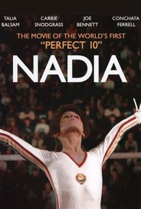
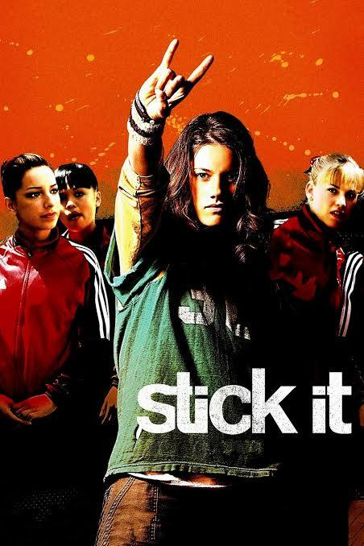
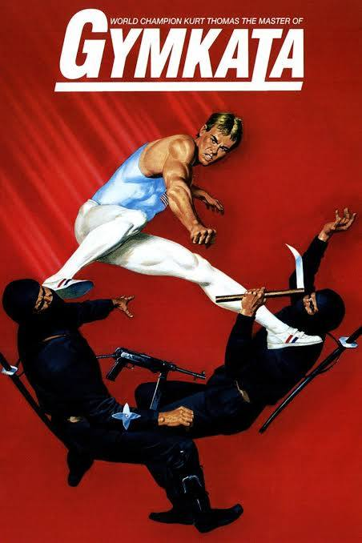
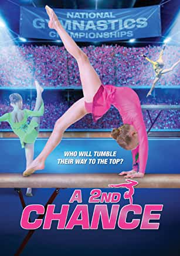
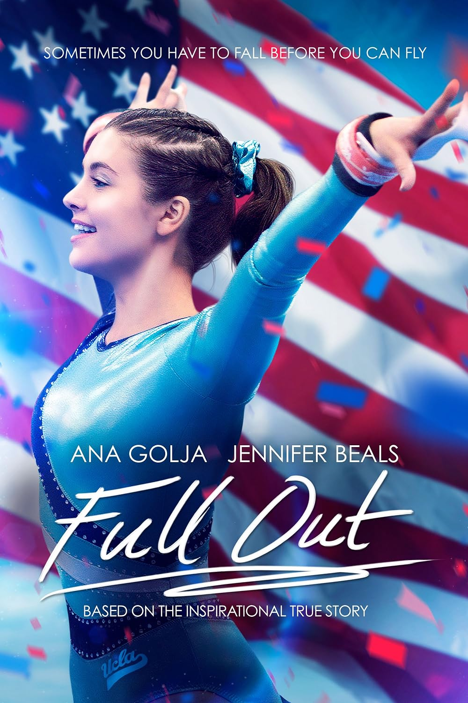
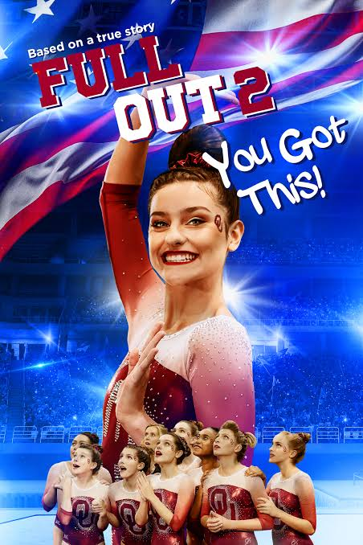
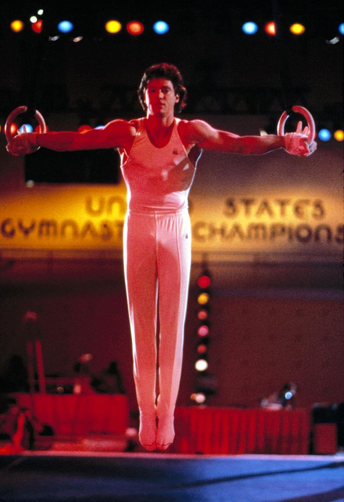

Normally this space is stats, results, and club histories. Today it's something different. Two things I love, gymnastics and film, just collided, and I can't help myself.
I should be upfront about where I'm coming from. I'm not a studio executive or anything like that, but I have produced my own films, been on my fair share of film sets, and worked on some pretty well known film and TV franchises along the way. That said, none of it makes me any kind of insider on this particular project, just someone with a rough feel for how announcements like this usually land, and how much can still change between now and a movie actually reaching a cinema. Meanwhile, at home, I'm the dad of a gymnast, a former gymnast myself, from a gymnastics family, and between her training and the two of us working through basically every gymnastics movie ever made, I've earnt a very unofficial expertise in this particular genre.
So when the announcement came through this week, it landed right in the overlap of the two things I never shut up about.
So, What Is "Nasty"?
Here's what's actually confirmed. Rose Byrne and Jenna Ortega are set to star in a new gymnastics drama titled Nasty, from Warner Bros' new indie label Clockwork. It's directed by Mary Bronstein, reuniting with Byrne after If I Had Legs I'd Kick You, which earnt Byrne an Oscar nomination. The script comes from Isabella Jarosz, her first sale, off the Black List (Hollywood's annual survey of the best unproduced screenplays doing the rounds, a pretty good launchpad for a new writer). Ortega and LuckyChap, the team behind Barbie and Saltburn, are producing alongside her.
The plot, as described so far, follows an athlete fighting for a spot on the Olympic gymnastics team who realises her biggest opponent isn't another gymnast, it's her own coach. A few outlets have already reached for Whiplash comparisons on tone. Production starts this northern autumn, with a theatrical release pencilled in for 2027, so we've got a long wait ahead of us.
On paper, that's a genuinely strong lineup. An Oscar-nominated lead reuniting with her director, a first-time screenwriter getting her big break, and a studio backing a gymnastics story with real dramatic ambition instead of another straight-to-streaming underdog tale. That part of the news is exciting.
About That Title
The title is where things get complicated, and honestly, it's the part of the announcement most people in the gymnastics community are actually talking about. Inside Gymnastics posted the announcement to Instagram, and the comments section did what comments sections do. A lot of the pushback is about the word "Nasty" itself, landing on a sport that has spent the better part of a decade trying to rebuild trust after the Nassar abuse scandal and everything that came out around it. Add in a coach cast as the antagonist, a lead actor who isn't a gymnast, and questions about how authentically the physicality of the sport will be portrayed, and you can see why people are wary before a single frame has been shot.
I get it. I really do. That reaction doesn't come from nowhere, and gymnastics has earnt the right to be protective of its image right now.
But I also don't want to convict a movie on its title alone, before we've seen a script, a trailer, or a single frame of footage. Titles get workshopped. They change. Sometimes a title that reads as provocative in a press release is just a blunt piece of wordplay that makes total sense once you've seen the film. And honestly, gymnastics movies have previous form here.
"It's not called gym-nice-tics."
That's Joanne, in Stick It, delivered completely deadpan by the most sweet, innocent looking kid in the whole cast, which is exactly why it gets a laugh. It's a throwaway joke, not a mission statement, and it's my favourite line in the movie. A title that plays a bit cheeky with the sport has a legitimate comedic tradition behind it. Maybe "Nasty" is going for that same wink. Maybe it isn't. I don't think we know yet, and I'd rather stay cautiously optimistic and let the actual film answer the question than assume the worst from a title on a press release. We'll know a lot more once there's a trailer to actually judge.
Since We're Already Talking Gymnastics Movies...
All of this sent me down a bit of a rabbit hole, and I figured, why not turn it into a proper ranking. A few ground rules first. I'm only ranking films I've actually seen, because half-remembered opinions on movies I skipped feel like a cop-out. And this is a gymnastics dad's ranking, not a film critic's, so don't expect any deep cuts on cinematography.
1. Nadia (1984)

This is the one I actually grew up on, well before Stick It existed, and it edges out top spot on nostalgia alone. Stick It is the better made film by any objective measure, glossy, well produced, a real studio picture, where Nadia is a modest, low-budget TV movie by comparison. But my mum was a self-made gym coach, purely out of spite, but that's another story, and I have vivid memories of her copying the film's V-snap conditioning scene, trying to work out solid conditioning techniques in an era before you could just look it up online. That's not something I can separate from how I feel about this film, and I don't especially want to.
2. Stick It (2006)

The better made film of the two, no argument, which is exactly why it's a near miss for top spot rather than a distant second. The one-liners alone carry it, Jeff Bridges is clearly having a great time, and it does its best to capture the culture of the sport, not just the leotards. My one gripe is that for a movie about gymnastics, there's frustratingly little actual gymnastics on screen relative to everything else going on. I'd have happily traded a few subplot minutes for more routines.
3. Gymkata (1985)

Using competitive gymnastics as a combat system to fight off attackers is such a magnificently stupid premise that it loops all the way back around to being brilliant. I haven't rewatched it in years, and I'll admit part of me is nervous it won't hold up the way I remember it. But come on. Gymnastics versus ninjas. Surely that premise can't have aged that badly.
4. A Second Chance

There's real pride in seeing an Australian gymnastics film get made at all, and my daughter genuinely loves this one. But let's be honest about what it is. Strip out the leotards and it's essentially a movie-length episode of Neighbours with some gymnastics thrown in. That's not necessarily a knock, plenty of great entertainment is built on soap opera bones, and it clearly works for its intended audience.
5. Full Out (2015) and Full Out 2: You Got This! (2020)


These sit in their own category entirely, squarely in "awful daytime TV movie" territory, and the acting can be genuinely rough in places. But I have to give credit where it's due, the cameos from real gymnasts, Alicia Sacramone, Jordyn Wieber, and others across the two films, add a layer of authenticity that a lot of glossier productions never bother with. Full Out 2 even gets a Nadia Comaneci cameo alongside Bart Conner, which, after everything I said about the original Nadia up at number one, feels like a fitting full circle moment. Watch them for the cameos, not the dialogue.
6. American Anthem (1986)

I'll be honest, I barely remember the plot. Looking back, it feels like a Cold War era piece as much as a gymnastics film, not unlike Gymkata in that sense, just with fewer ninjas. That's less of a criticism than it sounds. Before streaming, gymnasts didn't exactly have a deep catalogue to choose from. You watched what was on offer, and you were grateful for it.